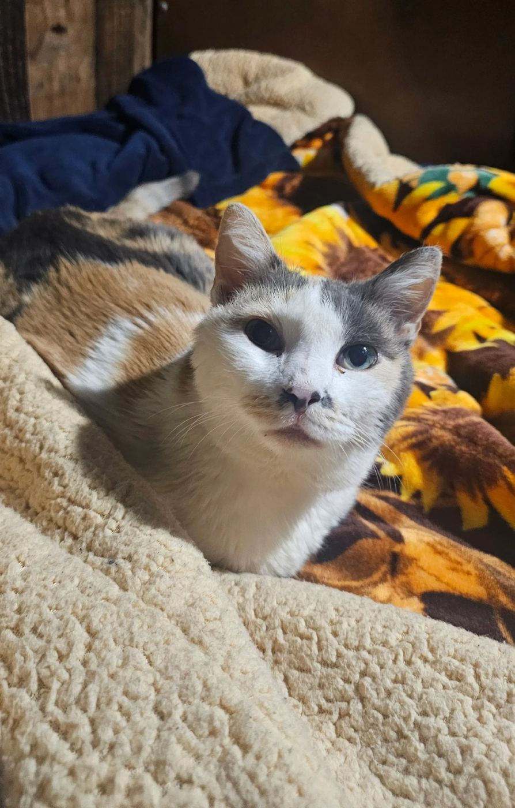
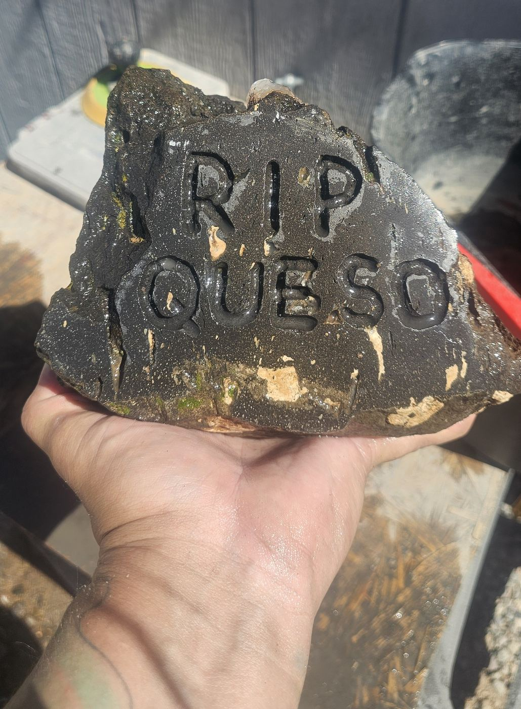
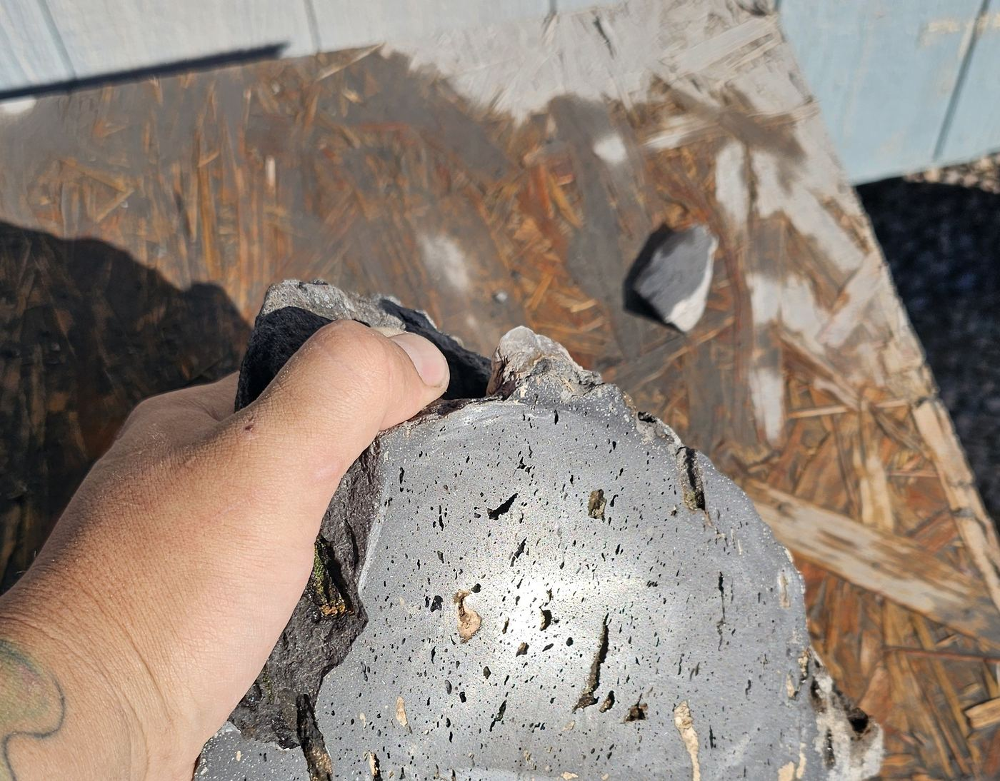

Custom Memorial Stones
Losing a pet is losing family. Each memorial stone is cut, shaped, and hand-lettered to order, made from natural material personally collected on the road. It is meant to be something you can hold, place in a garden, or keep close, rather than something ordered off a shelf.
Materials
Memorial pieces are typically made from obsidian, agate, or basalt, sourced from wherever the material has been personally collected. Other materials, such as petrified wood, can sometimes be arranged by special request, subject to what can be gathered by hand at the time.
Process & Timeline
Every piece is shaped and lettered entirely by hand, so turnaround time depends on the material and the complexity of the design. Reach out first to talk through what you have in mind. An estimated timeframe will be given before any work begins, and you'll be kept in the loop if that changes along the way.

In Memory of Queso
This piece was made for my own cat. It's shown here as an example of the kind of tribute this offering is meant to create.


Basalt & Agate Memorial
Vesicular basalt with a natural agate inclusion, hand-lettered on the front face.
Pricing
Every piece is priced individually based on material, size, and lettering. Reach out for a quote.
Inquire About a Memorial